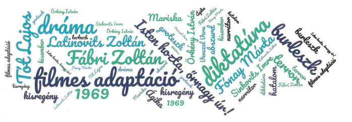

A megfilmesített irodalom - Örkény István: Tóték
FELELETVÁZLAT
A művekről
- Örkény István Tóték című kisregényét 1964-ben írta, majd átdolgozta színpadra, drámaváltozata 1967-ben jelent meg. A forgatókönyvéből készült 1969-ben Fábri Zoltán filmje Sinkovits Imre (Tót Lajos), Latinovits Zoltán (Varró őrnagy), Fónay Márta (Mariska) és Venczel Vera (Ágika) főszereplésével, Isten hozta, őrnagy úr! címmel. A filmet Darvas Iván narrálta.
- A mű leglényegesebb elemeit tekintve azonos a két változat. A drámában azonban Gyula halálhíréről az első rész végén értesülünk. A késleltetésnek dramaturgiai funkciója van: az írói cél a színházban így jobban érvényesül.
- A drámában megnő a postás szerepe, ami az abszurditás irányába való elmozdulás: egy együgyű figura is kerülhet hatalmi pozícióba, sorsokat irányíthat a maga szeszélyei szerint.
- Groteszk látásmód érvényesül mindkét alkotásban: az abszurd eszközeivel mutatják be a mátrai falucskában zajló két hét történéseit, egyszerre komikus és kétségbeejtően tragikus formában.
A téma
- Témája közvetve, nem direkt módon a II. világháború és annak léleknyomorító hatása.
- A hatalommal szembeni kiszolgáltatottság áll a mű középpontjában: meddig viselhető el a testi- és lelki terror, meddig nyomorítható a kisember, milyen mértékben deformálják a viselkedést és a személyiséget a totális diktatúrák mechanizmusai?
A történet
- A történet a második világháború idején játszódik Mátraszentannán (fiktív helység), ahol a falu és a Tót család életét felkavaró bő két hét eseményei követhetők nyomon. Tót Lajos (a nagy tiszteletnek örvendő tűzoltóparancsnok) és családja (felesége, Mariska és a lányuk, Ágika) vendégül látja a fronton szolgáló fiuk (Gyula) parancsnokát, a meggyötört idegzetű Varró őrnagyot annak reményében, hogy Gyulának jó sora lesz a parancsnok visszatérte után.
- Áldozatvállalásuk értelmetlen: fiuk már az őrnagy érkezése előtt életét veszti, de az erről szóló sürgönyt a falu félkegyelmű postása (Gyuri) nem kézbesíti.
- Az őrnagy fokozatosan borítja fel a család hierarchikus rendjét: Tót lekerül a piedesztálról, Mariska és Ágika lesi az őrnagy minden kívánságát – az egész falu a cinkosukká válik. A gépies dobozolásnak is van célja: a felszínen az idő hasznos eltöltése, valójában a szorongások, gondolatok, érzések elfedése.
- Tót és Varró konfliktusa kerül az események középpontjába. Az őrnagy rigolyáinak való megfelelés a kisember teljes önfeladásához vezet. Nem csoda, hogy az őrnagy négy darabban végzi.
A film és a dráma összehasonlítása
- A dráma az „egypercesek” stílusában ismerteti a kialakuló helyzetet, mutatja be a szereplőket. Az indító események közepébe csap és visszatekint, az olvasónak kell következtetnie a történésekre. A film kiszolgálja a nézőt, részletesen bemutatja a helyszínt, a szereplőket, eszközeivel könnyedén felvázolja a szituációt. Az apró eltérések a szereplők jellemének bemutatásakor az ábrázoló színművész alakításához, művészi habitusához lettek igazítva (pl. a térdet berogyasztós jelenet hiányzik a filmből, mert a Tótot alakító színész nem magasabb az őrnagyot megformálónál).
- A legfontosabb tartalmi eltérés a két alkotás között, hogy míg a drámában az első rész végén tudjuk meg, hogy Gyula meghalt, addig a filmben erre később kerül sor. Így ott már a kezdetektől nyilvánvaló, mennyire hiábavaló a szolgalelkű viselkedés, ami fokozza a groteszk hatást.
- A valóságos közegbe helyezett fantasztikus szituációk, a realitás és irrealitás egyszerre jelennek meg az alkotásokban, de a vásznon a dráma groteszk humorát filmes technikák, az adaptáció különleges, a burleszkekre emlékeztető megoldásai fokozzák, pl.
- a szereplő egyik pillanatról a másikra váratlanul eltűnik a képernyőről;
- a színészek mozgását irreálisan felgyorsítják;
- kimerevített állóképek (pl. a dobozolásnál);
- a némafilmekre jellemző feliratokon jelennek meg a kisregény legfontosabb tételmondatai.
- A túlzás eszközével is él a rendező, hiszen az egyre szaporodó dobozok szinte beterítik az egész udvart, a szereplők úgy bolyongnak benne, mint egy labirintusban → abszurd hatás.
- A filmben alig van zenei aláfestés, csak az őrnagy fogadásakor és búcsúztatásakor csendül fel a muzsika. Ugyanakkor dobozolás közben többször is énekelnek a szereplők. Az őrnagy az ének ütemére hajtogat, vagy vágja a papírt. Jelentős szerepe van a filmes adaptációban emellett a csendnek, a szereplők arckifejezésének, mimikájának (pl. Tót hozzáállása az esti dobozolásokhoz, ágyazás stb.).
- A film elején a narrátornak nagy szerepe van (kimerevített képkockák), de a játékidő felétől nem magyaráz, nem kommentál (majd a végén tér ismét vissza).
